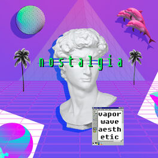

O QUE É?
O Vaporwave é um gênero musical e um movimento artístico que mistura nostalgia, estética retrô do auge dos anos 80 e referências tecnológicas como videogames, renderizações de computador fora de moda, cyberpunk, glitches (falhas), design web dos anos 2000, inspirações dos VHS e fitas cassetes , obras de arte da Ásia , além de elementos de arte e personagens japoneses , paisagens tropicais, estátuas clássicas gregas e publicidade , que tem influência no lounge no jazz.
